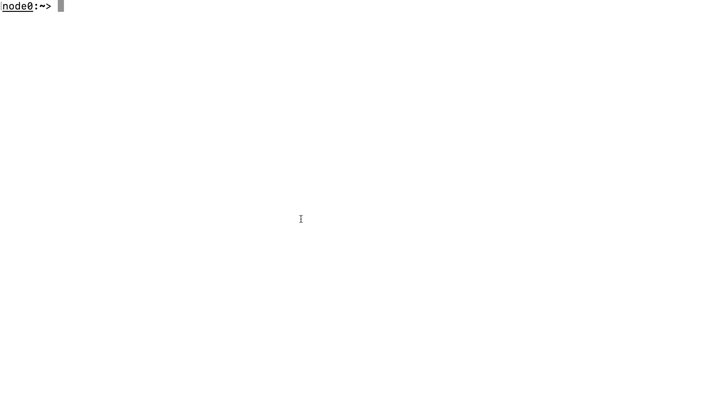

try
“Do, or do not. There is no try.”
We’re setting out to change that:
try cmd and commit—or not.
Description


try lets you run a command and
inspect its effects before changing your live
system. try uses Linux’s namespaces
(via unshare) and the overlayfs
union filesystem.
If try is useful to you, please
use the following citation:
@inproceedings{try:osdi:2026,
title = {Controlling Opaque-Component Effects with Semisolates and Try},
author = {Lamprou, Evangelos and Zhu, Tianyu (Ezri) and Jin, Di and Ntousakis, Grigoris and and Liargkovas, Georgios and Eng, Calvin and Kallas, Konstantinos and Greenberg, Michael and Vasilakis, Nikos},
booktitle = {20th USENIX Symposium on Operating Systems Design and Implementation (OSDI 26)},
year = {2026},
publisher = {USENIX Association},
tags = {correctness, security}
}Using try to inspect a
pip install command’s effects and
optionally commit them to your live system:

Getting Started
Dependencies
try relies on the following
Debian packages
attr(forgetfattr)pandocandautoconf(if working from a GitHub clone)
In cases where overlayfs doesn’t work on
nested mounts, you will need either mergerfs
or unionfs.
try should be able to autodetect
them, but you can specify the path to mergerfs
or unionfs with -U
(e.g. try -U ~/.local/bin/unionfs)
To run try’s test suite
(scripts/run_tests.sh), you will
need:
bashexpectcurl
try has been tested on the
following distributions:
Ubuntu 20.04 LTSor laterDebian 12Fedora 38Centos 9 Stream 5.14.0-325.el9Arch 6.1.33-1-ltsAlpine 6.1.34-1-ltsRocky 9 5.14.0-284.11.1.el9_2SteamOS 3.4.8 5.13.0-valve36-1-neptune
Note that try will only work on Linux 5.11 or higher for overlayfs to work in a user namespace.
Installing
There are three ways to install try:
The quick and janky way: grab the script. You only need the
tryscript. Put it in yourPATHand you’re ready to go. You won’t have documentation or utility support, but it should work as is.By cloning the repository. Run the following:
$ git clone https://github.com/binpash/try.git
$ autoconf && ./configure && make && sudo make installYou should now have a fully featured
try, including the support
utilities (which should help try
run faster) and manpage. Run
make test to confirm that
everything works.
- By using a source
distribution. Download
try-XXX.tgzfrom the release page. You can get the latest prerelease by downloadingtry-latest.tgz. You can then install similarly to the above:
$ git clone https://github.com/binpash/try.git
$ ./configure && make && sudo make installThe repository and source distribution are
slightly different: the repository does not
include the configure script
(generated by autoconf) or the
manpage (generated by pandoc), but
the source distribution does.
Arch Linux
try is present in AUR,
you can install it with your preferred AUR
helper:
yay -S tryor manually:
git clone https://aur.archlinux.org/try.git
cd try
makepkg -sicNix/NixOS
try is present in nixpkgs
and maintained by us.
nix-shell -p tryExample Usage
try is a higher-order command,
like xargs, exec,
nohup, or find. For
example, to install a package via
pip3, you can invoke
try as follows:
$ try pip3 install libdash
... # output continued belowBy default, try will ask you to
commit the changes made at the end of its
execution.
...
Defaulting to user installation because normal site-packages is not writeable
Collecting libdash
Downloading libdash-0.3.1-cp310-cp310-manylinux_2_17_x86_64.manylinux2014_x86_64.whl (254 kB)
━━━━━━━━━━━━━━━━━━━━━━━━━━━━━━━━━━━━━━━━ 254.6/254.6 KB 2.1 MB/s eta 0:00:00
Installing collected packages: libdash
Successfully installed libdash-0.3.1
WARNING: Running pip as the 'root' user can result in broken permissions and conflicting behaviour with the system package manager. It is recommended to use a virtual environment instead: https://pip.pypa.io/warnings/venv
Changes detected in the following files:
/tmp/tmp.zHCkY9jtIT/upperdir/home/gliargovas/.local/lib/python3.10/site-packages/libdash/ast.py (modified/added)
/tmp/tmp.zHCkY9jtIT/upperdir/home/gliargovas/.local/lib/python3.10/site-packages/libdash/_dash.py (modified/added)
/tmp/tmp.zHCkY9jtIT/upperdir/home/gliargovas/.local/lib/python3.10/site-packages/libdash/__init__.py (modified/added)
/tmp/tmp.zHCkY9jtIT/upperdir/home/gliargovas/.local/lib/python3.10/site-packages/libdash/__pycache__/printer.cpython-310.pyc (modified/added)
/tmp/tmp.zHCkY9jtIT/upperdir/home/gliargovas/.local/lib/python3.10/site-packages/libdash/__pycache__/ast.cpython-310.pyc (modified/added)
<snip>
Commit these changes? [y/N] ySometimes, you might want to pre-execute a
command and commit its result at a later time.
Running try -n will print the
overlay directory on STDOUT without committing
the result.
$ try -n "curl https://sh.rustup.rs | sh"
/tmp/tmp.uCThKq7LBKAlternatively, you can specify your own
existing overlay directory using the
-D [dir] flag:
$ mkdir rustup-sandbox
$ try -D rustup-sandbox "curl https://sh.rustup.rs | sh"
$ ls rustup-sandbox
temproot upperdir workdirAs you can see from the output above,
try has created an overlay
environment in the rustup-sandbox
directory.
Manually inspecting upperdir reveals the changes to the files made inside the overlay during the execution of the previous command with try:
~/try/rustup-sandbox/upperdir$ du -hs .
1.2G .You can inspect the changes made inside a
given overlay directory using
try:
$ try summary rustup-sandbox/ | head
Changes detected in the following files:
rustup-sandbox//upperdir/home/ubuntu/.profile (modified/added)
rustup-sandbox//upperdir/home/ubuntu/.bashrc (modified/added)
rustup-sandbox//upperdir/home/ubuntu/.rustup/update-hashes/stable-x86_64-unknown-linux-gnu (modified/added)
rustup-sandbox//upperdir/home/ubuntu/.rustup/settings.toml (modified/added)
rustup-sandbox//upperdir/home/ubuntu/.rustup/toolchains/stable-x86_64-unknown-linux-gnu/lib/libstd-8389830094602f5a.so (modified/added)
rustup-sandbox//upperdir/home/ubuntu/.rustup/toolchains/stable-x86_64-unknown-linux-gnu/lib/rustlib/etc/lldb_commands (modified/added)
rustup-sandbox//upperdir/home/ubuntu/.rustup/toolchains/stable-x86_64-unknown-linux-gnu/lib/rustlib/etc/gdb_lookup.py (modified/added)You can also choose to commit the overlay directory contents:
$ try commit rustup-sandboxYou can also run try explore to
open your current shell in try, or
/try explore /tmp/tmp.X6OQb5tJwr to
explore an existing sandbox.
To specify multiple lower directories for
overlay (by merging them together), you can use
the -L (implies -n)
flag followed by a colon-separated list of
directories. The directories on the left have
higher precedence and can overwrite the
directories on the right:
$ try -D /tmp/sandbox1 "echo 'File 1 Contents - sandbox1' > file1.txt"
$ try -D /tmp/sandbox2 "echo 'File 2 Contents - sandbox2' > file2.txt"
$ try -D /tmp/sandbox3 "echo 'File 2 Contents - sandbox3' > file2.txt"
# Now use the -L flag to merge both sandbox directories together, with sandbox3 having precedence over sandbox2
$ try -L "/tmp/sandbox3:/tmp/sandbox2:/tmp/sandbox1" "cat file1.txt file2.txt"
File 1 Contents - sandbox1
File 2 Contents - sandbox3In this example, try will merge
/sandbox1, /sandbox2
and /sandbox3 together before
mounting the overlay. This way, you can combine
the contents of multiple try
sandboxes.
Artifact evaluation:
The try artifact as was
submitted to the OSDI’26 artifact evaluation
corresponds to the osdi26-ae branch
of this repoitory. To evaluate the artifact for
the OSDI’26 paper titled “Controlling
Opaque-Component Effects with Semisolates and
Try”, jump straight to INSTRUCTIONS.md.
Known Issues
Any command that interacts with other
users/groups will fail since only the current
user’s UID/GID are mapped. However, the future
branch has support for uid/mapping; please
refer to the that branch’s readme for
installation instructions for the
try-gidmapper helper (root access
is required for installation).
Shell quoting may be unintuitive, you may
expect try bash -c "echo a" to
work, however, try will actually execute
bash -c echo a, which will not
result in a being printed. We
are currently not planning on resolving this
behavior.
Please also report any issue you run into while using the future branch!
Version History
- v0.2.0 - 2023-07-24
- Refactor tests.
- Improved linting.
- Hide
try-internal variables from scripts. - Style guide.
- Testing in Vagrant.
- Support nested mounts.
- Resolve issues with
userxattr. - Better support for
unionfs. - Use
/bin/sh, not/bin/bash. -iflag to ignore paths.- Interactive improvements.
- v0.1.0 - 2023-06-25
- Initial release.
See Also
checkinstall (unmaintained)
checkinstall keeps track of all the files created or modified by your installation script, builds a standard binary package and installs it in your system. This package can then be easily installed, managed, and removed using the package manager of your Linux distribution. It helps in maintaining a clean and organized system by keeping track of installed software and its dependencies.
License
This project is licensed under the MIT License - see LICENSE for details.
Copyright (c) 2023 The PaSh Authors.